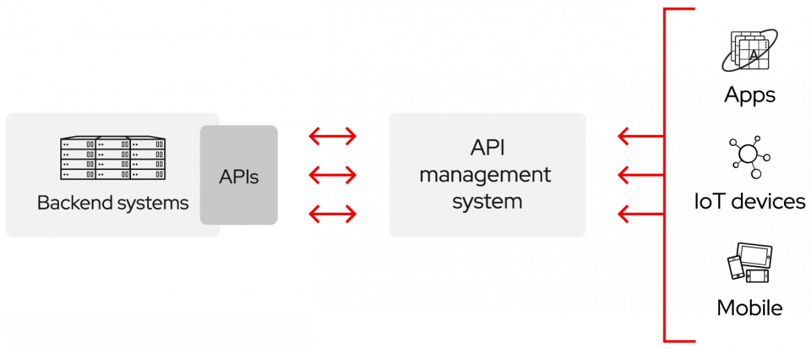
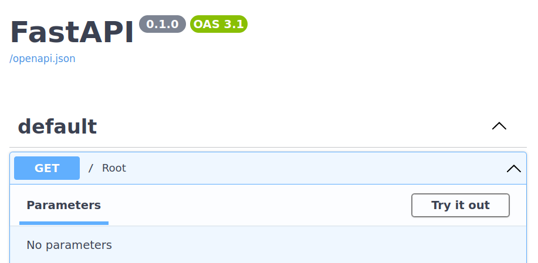
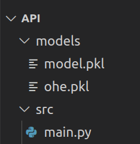
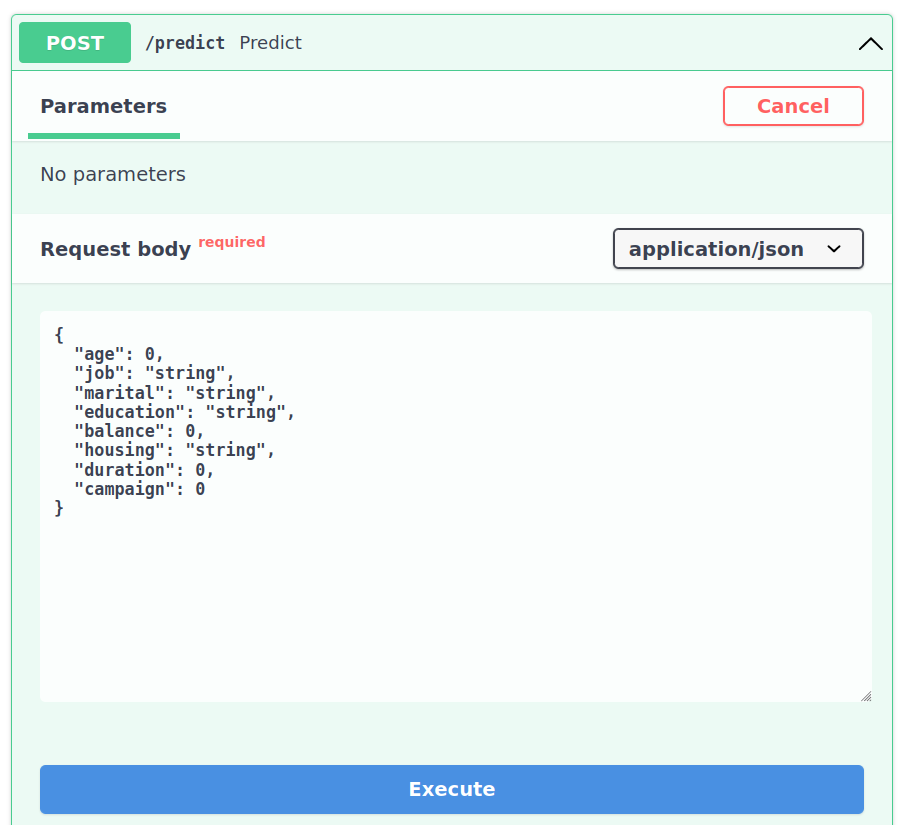

Model Deployment
Categories of Model Deployment
A core choice you'll need to determine that will impact both your customer base and the engineers constructing your solution is how it computes and provides its forecasts to consumers: online or in batches.
Online prediction is when predictions are generated and returned as soon as requests for these predictions are received by the service. This baseline selection on synchronous or asynchronous predictions will shape many subsequent designing decisions.
The main advantege of online prediction is that it makes it easier to provide a real-time user experience. Suppose that you deployed an AI model for customer claiming and that the model makes predictions for all customers overnight. During the day, things like sending messages to the call center (indicating that the customer is dissatisfied) or placing new orders (perhaps indicating that the customer is satisfied) may happen. Making the prediction closer to when it is needed makes possible the use of newer information and maybe return a more reliable and valuable forecast.
When online prediction is the choice to deploy a model, it is generally made available to other applications through API calls. In this handout, we are going to build an API to make predictions using the model from the last class.
When is this decision made?
Remeber the ML lifecycle from last class:

Question 1
Answer!
This decision depends on how the model will be used. It is usually possible to have a vision of this during the planning phase. It's something that can be rethought and changed, but generally knowing the company's problem (and the target variable to be predicted) already gives us an idea which style of deployment will generate more value for the business.
What are APIs?
APIs (Application Programming Interfaces) allow developers to access data and services. They enable platforms, applications and systems to connect and interact with each other.

You can use APIs to:
- Transcribe audio using Google API
- Make an App that interact with ChatGPT
- Let an App send data to your ML models make and return predictions
- And so forth!
Some usefull links:
- https://www.redhat.com/en/topics/api/what-are-application-programming-interfaces
- https://aws.amazon.com/pt/what-is/api/
Build an API
To construct out API, we are using FastAPI. Follow the handout steps and also make use of the official tutorial available at FastAPI.
Tip!
Create a repository (public or private) in your own github account to store your API.
It is not necessary to submit the activity for this class.
Use the environment (conda or venv) from the last class or create a new one for this class!
Install libs
Let's install the necessary libraries:
Then, create a folder called src:
A simple API
Copy and paste this code in the src/main.py file:
from fastapi import FastAPI
app = FastAPI()
@app.get("/")
async def root():
return "Model API is alive!"
Inside src, start the api with the command:
To test, go to http://localhost:8900 in your browser!
One of the wonders of fastapi is the availability of documentation. Go to http://localhost:8900/docs in your browser. You will see something like:

Click on "Try it out"!
An API that makes predictions
In the root folder of today's class, create a new folder called models:
We are going to store in this folder the pickle of the models trained in the last class.
Exercício 2
Now, your folder should have the following structure:

Then, create the src/model.py file. In addition to importing the necessary libraries, this file must have two functions that open (and return) the models contained in the ohe.pkl and model.pkl files.
These functions will be imported and used in main.py!
Here it is a new (and incomplete) version of main.py:
from fastapi import FastAPI
# loader functions that you programmed!
from model import load_model, load_encoder
app = FastAPI()
@app.get("/")
async def root():
"""
Route to check that API is alive!
"""
return "Model API is alive!"
@app.post("/predict")
async def predict():
"""
Route to make predictions!
"""
# Load the models
ohe = load_encoder()
model = load_model()
return {"prediction": "I can almost make predictions!"}
To make predictions, the predict route needs to receive information about the client (person). When analyzing a row of the X table from the last class (before applying the encoder), an example of the necessary features using JSON format would be:
{
"age": 42,
"job": "entrepreneur",
"marital": "married",
"education": "primary",
"balance": 558,
"housing": "yes",
"duration": 186,
"campaign": 2
}
Let's represent the person/customer information using a class identified as "Person". Here's an example with the first two fields:
Now we can update the predict route to receive a person's information!
@app.post("/predict")
async def predict(person: Person):
"""
Route to make predictions!
"""
ohe = load_encoder()
model = load_model()
df_person = pd.DataFrame([person.dict()])
person_t = ohe.transform(df_person)
pred = model.predict(person_t)[0]
return {"prediction": str(pred)}
Exercício 3
Return to http://localhost:8900/docs in your browser and test the predict route, adding the JSON content you saw earlier!

Tip!
Deploying many online ML systems is conceptually simpler since the records to be scored can be distributed between several machines using a load balancer. But this is a problem for another day!
Improve route with example!
Let's add an example to the code so that the documentation is already pre-populated with an example, making it easier for the user to test the route.
from typing import Annotated
from fastapi import FastAPI, Body
@app.post("/predict")
async def predict(
person: Annotated[
Person,
Body(
examples=[
{
"age": 42,
"job": "entrepreneur",
"marital": "married",
"education": "primary",
"balance": 558,
"housing": "yes",
"duration": 186,
"campaign": 2,
}
],
),
],
):
"""
Route to make predictions!
"""
ohe = load_encoder()
model = load_model()
person_t = ohe.transform(pd.DataFrame([person.dict()]))
pred = model.predict(person_t)[0]
return {"prediction": str(pred)}
Call API from Python!
If another application needs access to the API, it can simply make a request.
See an example using route / (check if is alive):
And for the predict route:
import requests as req
data = {
"age": 42,
"job": "entrepreneur",
"marital": "married",
"education": "primary",
"balance": 558,
"housing": "yes",
"duration": 186,
"campaign": 2,
}
resp = req.post("http://localhost:8900/predict", json=data)
print(f"Status code: {resp.status_code}")
print(f"Response: {resp.text}")
Add Authentication
Without proper authentication, APIs would be vulnerable to unnecessary access attempts and even malicious attacks from unauthorized parties.
For simplicity, let's assume there is only one valid token ("abc123") as the full implementation of authentication would need database access and caching for performance.
Let's add a dependency to the predict route. When the route is called, the function that resolves the dependency will extract the token from the header check if it is valid:
The function and the route (I removed the example for simplicity):
def get_username_for_token(token):
if token == "abc123":
return "pedro1"
return ""
async def validate_token(credentials: HTTPAuthorizationCredentials = Depends(bearer)):
token = credentials.credentials
username = get_username_for_token(token)
if username == "":
raise HTTPException(status_code=401, detail="Invalid token")
return {"username": username}
@app.post("/predict")
async def predict(person: Person,
user=Depends(validate_token)
):
# Code supressed
pass
The full code is:
from fastapi import FastAPI, HTTPException, Depends, Body
from fastapi.security import HTTPAuthorizationCredentials, HTTPBearer
from pydantic import BaseModel
from typing import Annotated
from model import load_model, load_encoder
import pandas as pd
app = FastAPI()
bearer = HTTPBearer()
def get_username_for_token(token):
if token == "abc123":
return "pedro1"
return ""
async def validate_token(credentials: HTTPAuthorizationCredentials = Depends(bearer)):
token = credentials.credentials
username = get_username_for_token(token)
if username == "":
raise HTTPException(status_code=401, detail="Invalid token")
return {"username": username}
class Person(BaseModel):
age: int
job: str
marital: str
education: str
balance: int
housing: str
duration: int
campaign: int
@app.get("/")
async def root():
return "Model API is alive!"
@app.post("/predict")
async def predict(
person: Annotated[
Person,
Body(
examples=[
{
"age": 42,
"job": "entrepreneur",
"marital": "married",
"education": "primary",
"balance": 558,
"housing": "yes",
"duration": 186,
"campaign": 2,
}
],
),
],
user=Depends(validate_token),
):
ohe = load_encoder()
model = load_model()
person_t = ohe.transform(pd.DataFrame([person.dict()]))
pred = model.predict(person_t)[0]
return {
"prediction": str(pred),
"username": user["username"]
}
Python
Call the API using Bearer Token Authentication from Python:
import requests as req
import time
token = "abc123"
headers = {"Authorization": f"Bearer {token}"}
data = {
"age": 42,
"job": "entrepreneur",
"marital": "married",
"education": "primary",
"balance": 558,
"housing": "yes",
"duration": 186,
"campaign": 2,
}
resp = req.post("http://localhost:8500/predict",
json=data,
headers=headers)
print(resp.status_code)
print(resp.text)
Exercício 4
Loading Models at Startup
A performance issue with AI APIs is the time required to open models. Notice that the way we did it, the model is opened every time the predict wheel is called.
We can configure so that models are opened when the API starts:
ml_models = {}
@app.on_event("startup")
async def startup_event():
ml_models["ohe"] = load_encoder()
ml_models["models"] = load_model()
So, the predict route would now have:
Rather than:
Especially for larger models, this can represent a good performance improvement.
That is all for today!
References
- Image: https://www.redhat.com/rhdc/managed-files/styles/wysiwyg_full_width/private/API-page-graphic.png?itok=RRsvST-
- Introduction to MLOps. Chapter 6.
- Designing Machine Learning Systems. Chapter 7.
{kind=link}